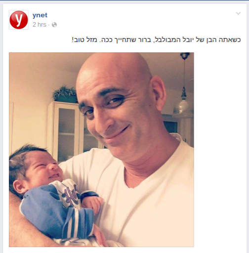

העברת מידע בתמונה
נוצר על ידי Tailor Vijay
http://facebook.com/tailorvj | @tailorvj | tailor.vj@gmail.com | 052-5369583
מדווחים מהשטח
מי?
מה?
מתי?
מדוע?
מקום
מי
מי
מי
מי, מה, מתי, מקום
מי, מקום
כמה
מי, מה
מי, מה
מי, מה, כמה, מקום
מי, מה, מקום
מי, מה, מקום
מי, מה, מקום
מי, מה, מקום
יסודות בצילום
תאורה
תאורה
פלאש
זום דיגיטלי

פוקוס
White Balance
חלוקת הפריים - שלישים

חלוקת הפריים - שלישים
חלוקת הפריים - נקודות מפגש

וידאו
אחיזת המצלמה
ייצוב
שידור חי
הנחיות כלליות
מה מטרת השידור?
התראה מראש והפצה
איכות החיבור לאינטרנט
איזו חבילת גלישה יש לכם?
Facebook Live
שידורים מעל 10 דקות
תהיו אישיים - שימו לב לתגובות
עודדו אנשים להירשם בסוף השידור להתראות
קחו בחשבון שכל הזמן מצטרפים ועוזבים צופים
Periscope
הרשת של טוויטר
מגיבה לשינויים בתנוחת המצלמה
ההקלטה נעלמת אחרי 24 שעות
קחו בחשבון שכל הזמן מצטרפים ועוזבים צופים
אפשר להגביל את קהל הצופים והמגיבים
שתפו לחשבון הטוויטר
עודדו צופים לשתף בטוויטר

Thanks
http://facebook.com/tailorvj | @tailorvj | tailor.vj@gmail.com | 052-5369583
Credits
Backgrounds from flickr under Creative Commons - click for list